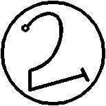

Yirminci İsim SUHRIM’dir
Kadimlere tapanların nerede olabileceklerini araştırır. Onu ayak işleri yapmak için gönderen Rahip korkunç bir riske girer, çünkü SUHRIM kolayca ve düşünmeden öldürür. Kelimesi MASHSHANERGAL’dir ve mührü budur:
